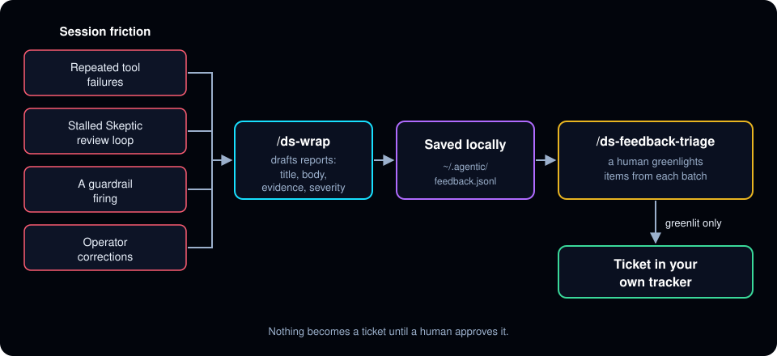
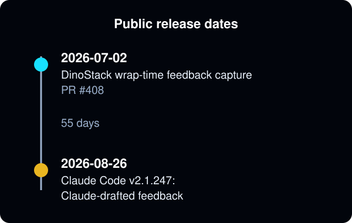

From session friction to tracker tickets: DinoStack's feedback capture
Agents hit friction all the time: a tool that keeps failing, a review loop that won't converge, a correction you had to make twice. Most of it is forgotten by the next session. DinoStack captures it instead. When a session wraps up, the agent turns that friction into draft reports, and you decide which ones become tickets in your own tracker.
What gets captured
The capture step runs inside /ds-wrap, the command that closes out a session. It checks four signals:
- Repeated tool failures: a tool that failed and had to be worked around.
- A stalled review loop: a Skeptic review loop that hit its round cap, stopped converging, or was blocked.
- A guardrail firing: for example the guard that stops an agent from ending its turn to ask permission for an obvious next step.
- Operator corrections: turns where you corrected or rejected what the agent did, quoted verbatim.
For each one it drafts a report with a title, a short body, the evidence, and a severity, and saves it locally to ~/.agentic/feedback.jsonl. A session with no friction writes nothing. The step can never break or delay the wrap: any error inside it is swallowed.

A human decides what gets filed
The drafts pile up across every project on your machine. When you have time, run /ds-feedback-triage. It shows the open drafts grouped by scope (the methodology itself, or the project you were working in) and ordered by severity, and creates tracker tickets only for the items you explicitly greenlight. Ticket creation is batch, never automatic.
Why it matters
Friction is the most direct evidence of where your process or tooling is weak, and it is gone once the session ends. Capturing it at wrap time, with the evidence attached, turns it into a backlog you can act on. Because the tickets land in your own tracker, the fixes stay with the team that owns the process.
Similar features elsewhere
Claude Code added Claude-drafted feedback, which drafts a report when a tool keeps failing, Claude can't help with a request, or you point out a mistake; you review drafts in /feedback, and nothing reaches Anthropic until you send it. It requires v2.1.238, published on 2026-08-20, 49 days after DinoStack's capture step merged on 2026-07-02. The difference is the destination: DinoStack files reports into your own tracker, and Claude Code sends them to Anthropic.

Sources
- DinoStack PR #403:
bin/agentic-feedback, the home-dir feedback store CLI, merged 2026-07-02 (commit177d78a8f) - DinoStack PR #408: wrap Part D.5 feedback capture and the triage command (then named
/feedback-triage), merged 2026-07-02T19:44:32Z (commitb2a498b87) - Claude Code What's New, Week 35 (August 24-28, 2026): Claude-drafted feedback, requires v2.1.238 or later
- Claude Code CHANGELOG: lists the
SendFeedbacktool under v2.1.247 (published 2026-08-26); v2.1.238 was published to npm on 2026-08-20